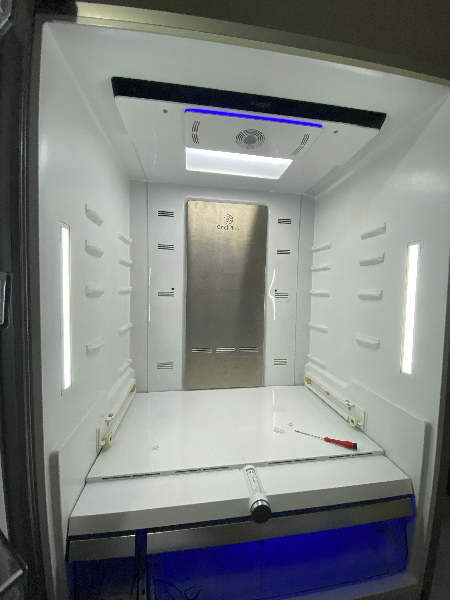
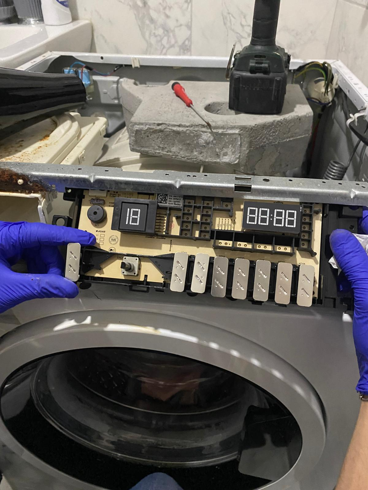
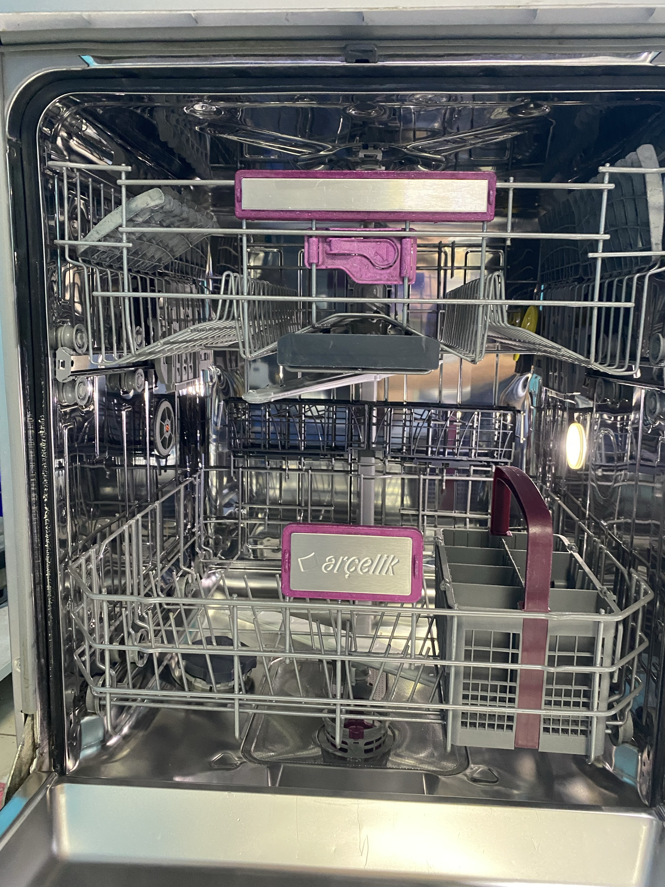
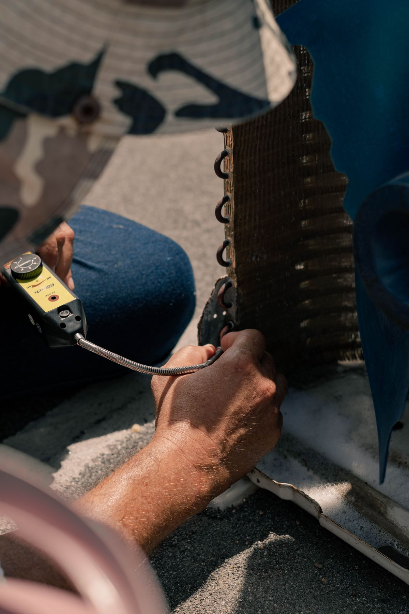

PENDİK · KURTKÖY · TUZLA · KARTAL
Evinizdeki her cihaz için
özenli teknik servis.
Profesyonel ustalarımızla bakım ve onarım desteği.
Cihazınızı seçin, hizmetimizi ve gerçek çalışmalarımızı inceleyin.
HİZMETLERİMİZ

01 / SERVİS ARŞİVİBuzdolabı
Soğutma, buzlanma, su kaçağı ve fan sorunları.
Hizmeti inceleyin
02 / SERVİS ARŞİVİÇamaşır makinesi
Yıkama, sıkma, tahliye ve elektronik kontrol sorunları.
Hizmeti inceleyin
03 / SERVİS ARŞİVİBulaşık makinesi
Yıkama, tahliye, su kaçağı ve kontrol paneli sorunları.
Hizmeti inceleyin 04 / SERVİS ARŞİVİ
04 / SERVİS ARŞİVİKurutma makinesi
Isıtma, kurutma, hava dolaşımı ve program sorunları.
Hizmeti inceleyin 05 / SERVİS ARŞİVİ
05 / SERVİS ARŞİVİDerin dondurucu
Dondurma performansı, buzlanma ve sıcaklık uyarıları.
Hizmeti inceleyin 06 / SERVİS ARŞİVİ
06 / SERVİS ARŞİVİFırın
Isıtma, pişirme, sıcaklık kontrolü ve fan sorunları.
Hizmeti inceleyin
07 / TEMSİLÎ FOTOĞRAFKlima
Klima bakımı, temizlik, soğutma ve tahliye sorunları.
Hizmeti inceleyin 08 / SERVİS ARŞİVİ
08 / SERVİS ARŞİVİKombi
Sıcak su, ısınma, basınç ve ateşleme sorunları.
Hizmeti inceleyinDEĞİŞEN PARÇADA GARANTİ
İŞİMİZİN ARKASINDAYIZ
Güven, servisimizin
bir parçası.
Profesyonel ustalarımızın değiştirdiği parçalar için 1 yıl garanti sunuyoruz. Yapılacak işlem ve garanti kapsamı hakkında bilgi almak için bize ulaşın.
Dr. Beyaz Eşya Servisi bağımsız bir teknik servistir. Markaların yetkili servisi değiliz.
Garanti hakkında bize sorunYAKININIZDAYIZ
Pendik’ten çevre ilçelere.
Pendik, Kurtköy, Tuzla ve Kartal için servis randevusu uygunluğunu öğrenin.
Orhangazi, Vatan Cd. No:15
Pendik / İstanbul